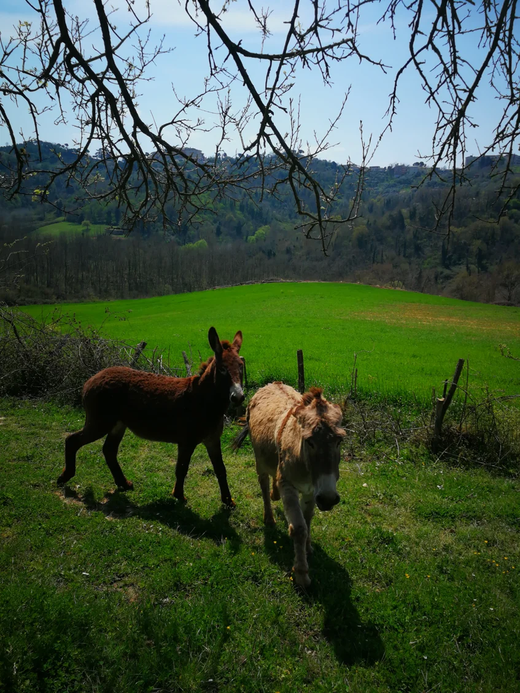
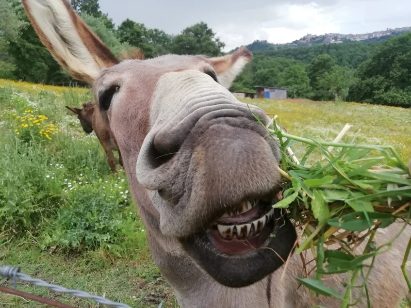
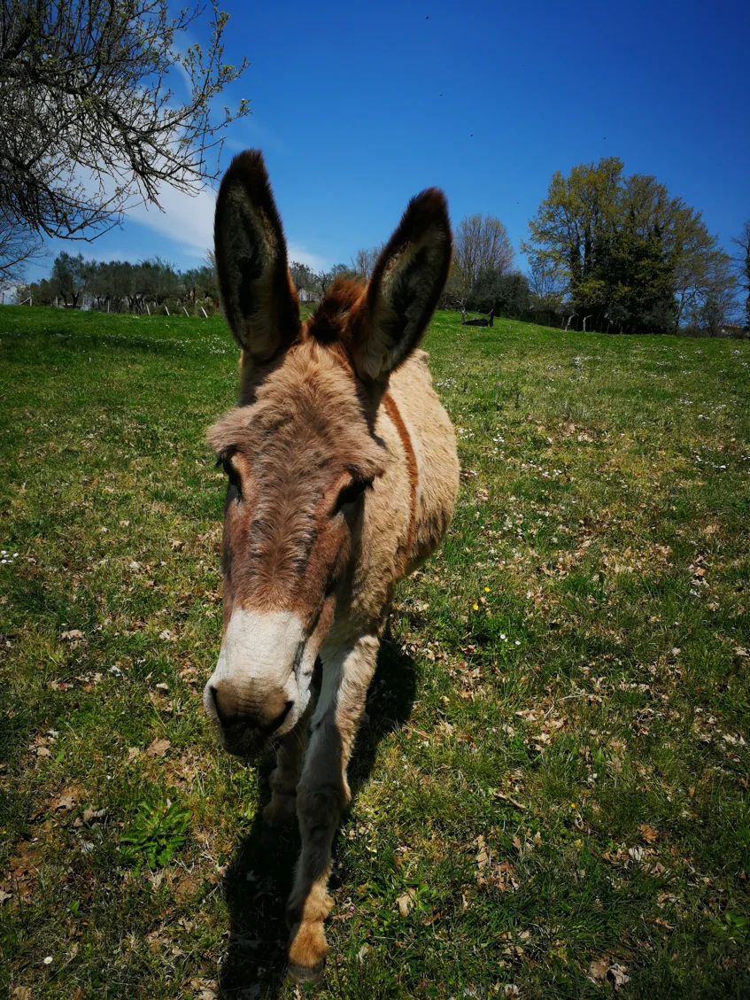
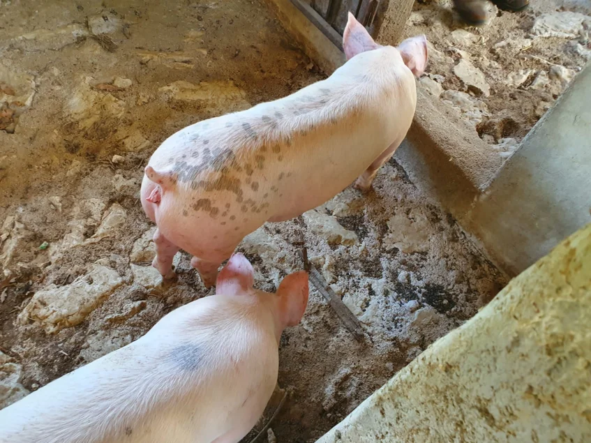
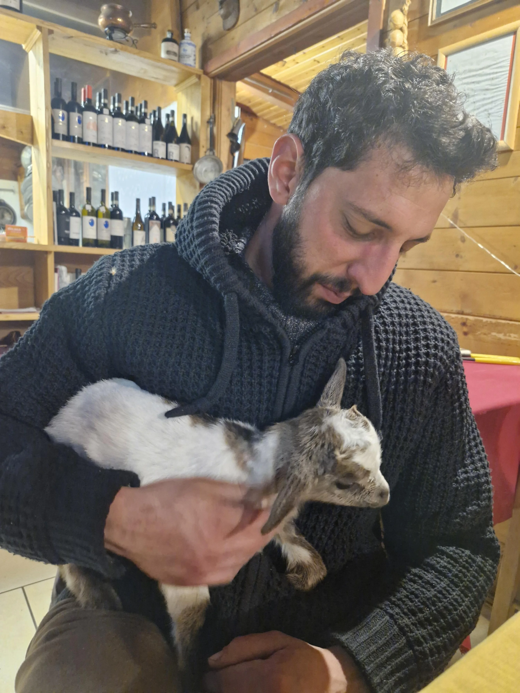
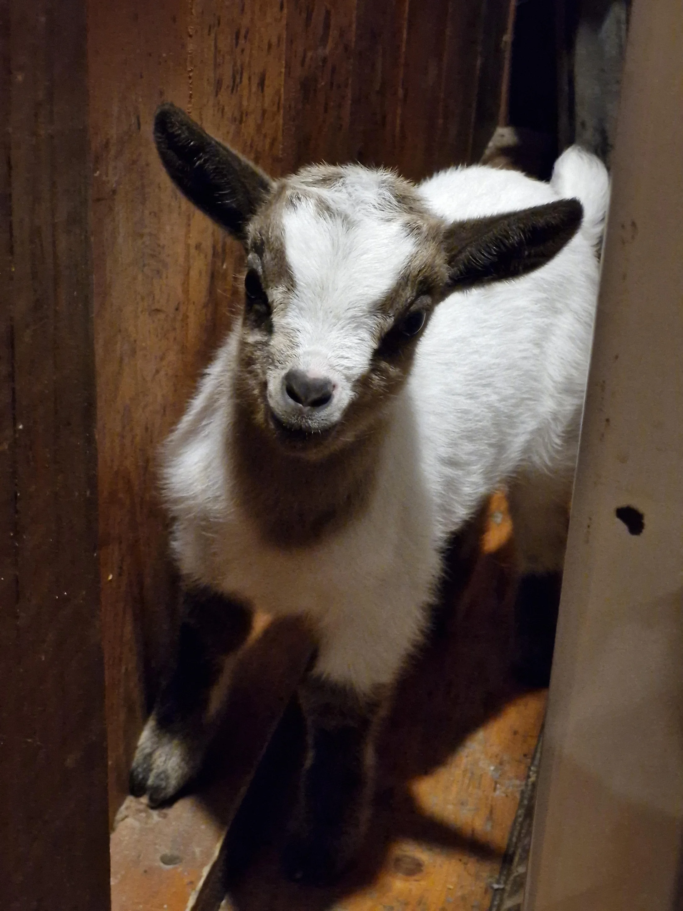
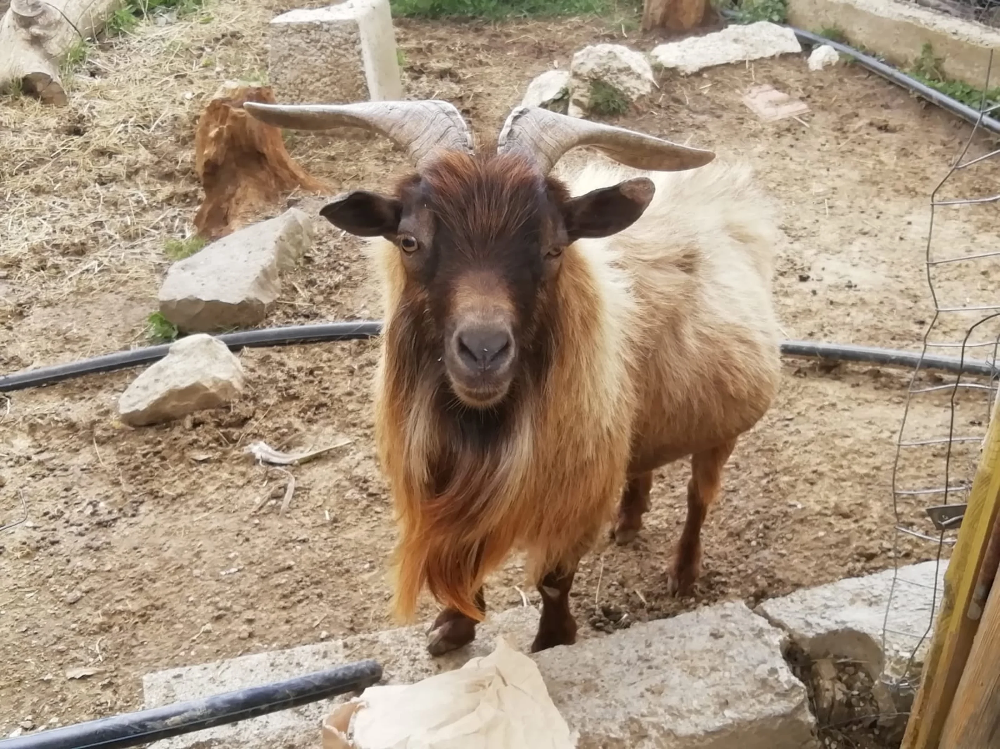
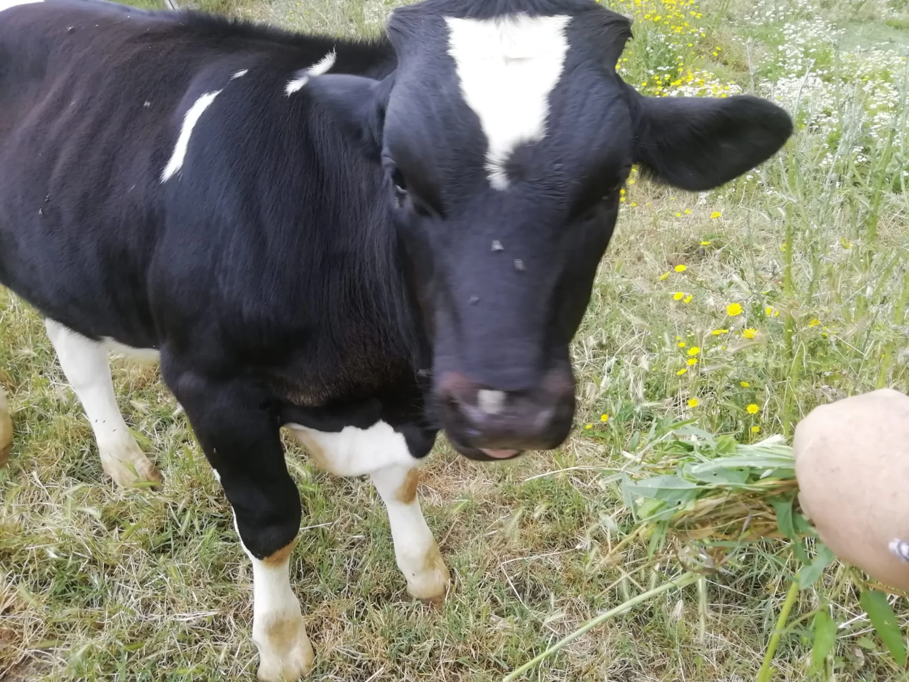
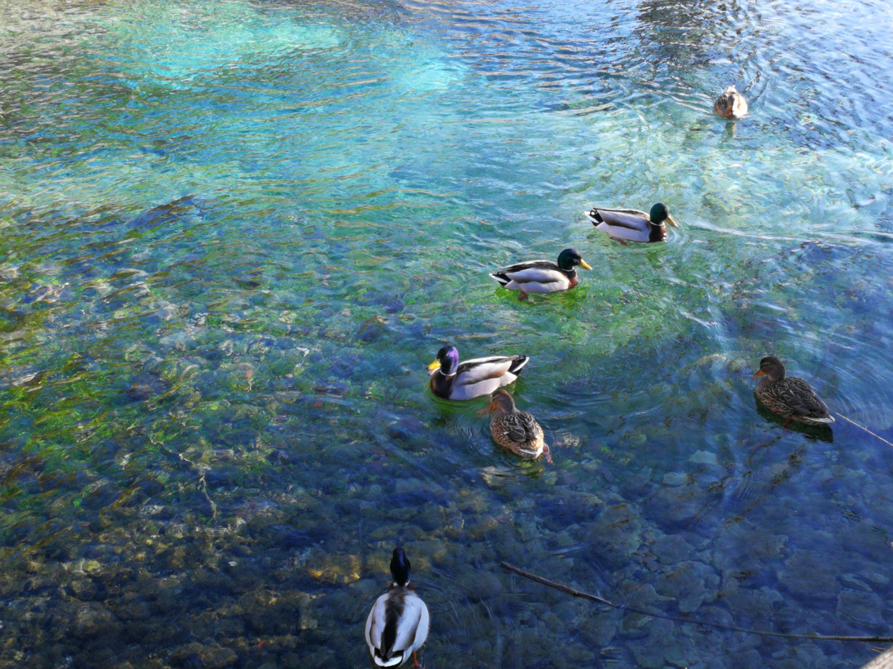
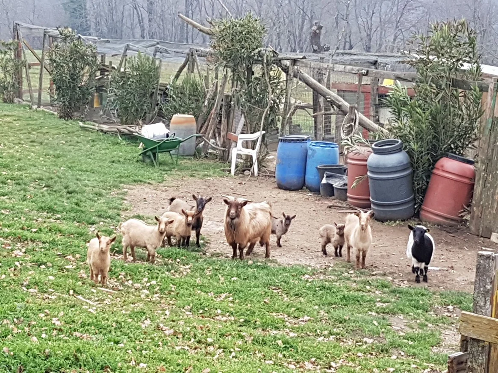

I nostri animali
Durante la visita al nostro agriturismo potrete visitare la fattoria, accompagnati da Giuseppe o in autonomia.
Gli animali vivono allo stato semi‑brado in grandi recinti: mucche e vitelli, asinelli, caprette nane, galline, anatre, tacchini americani e fagiani.
Dal nostro agriturismo partono anche sentieri nel bosco che permettono di raggiungere Anagni a piedi.









